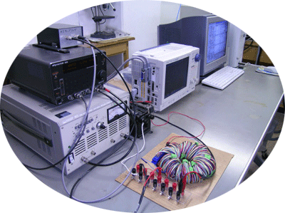

MAGNETIC MATERIALS & ENERGY SYSTEMS
磁性材料から、
次世代エネルギー技術へ。
磁性材料の特性評価、インバータ励磁、低損失磁心、モータ、磁気応用技術を研究しています。
すべての研究テーマを見る →
研究分野
過去の研究テーマ・研究図を含めた公開前の確認用サイトです。
MAGNETIC MATERIALS & ENERGY SYSTEMS
磁性材料の特性評価、インバータ励磁、低損失磁心、モータ、磁気応用技術を研究しています。
すべての研究テーマを見る →
過去の研究テーマ・研究図を含めた公開前の確認用サイトです。